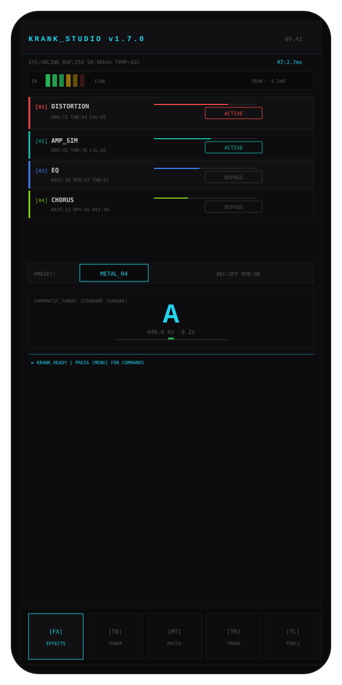
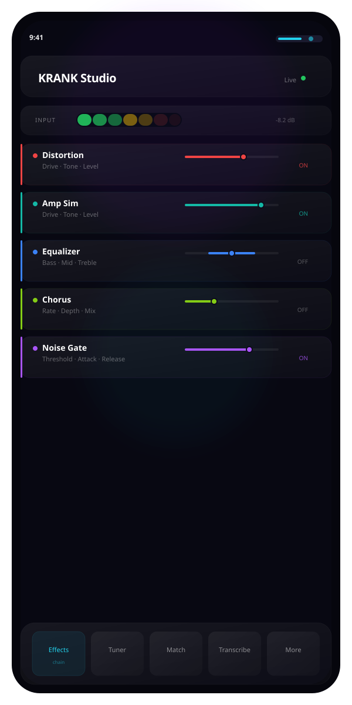
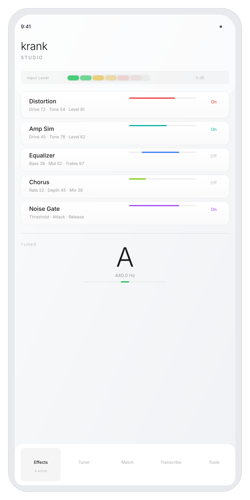
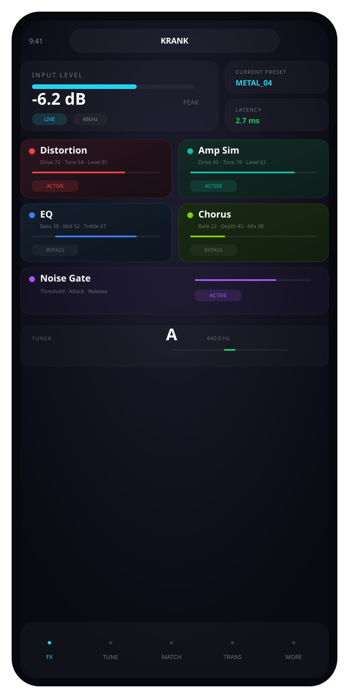
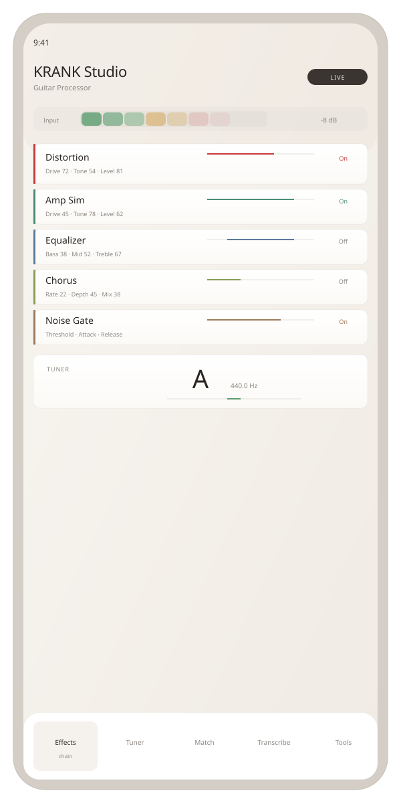

Military terminal aesthetic, monospace density, CRT scanlines, raw mechanical precision. High information density, tactical-grade UI.
TACTICAL TERMINAL
Premium agency feel, glassmorphism cards, cinematic glow, Apple-esque refinement. Expensive, luminous, sophisticated.
PREMIUM AGENCY
Clean editorial, abundant whitespace, restrained color, light mode. Focus on typographic hierarchy and content breathing room.
EDITORIAL
Gapless bento grid, extreme scale contrast, dark immersive, Cabinent Grotesk typography. High visual impact, motion-ready foundation.
BENTO GRID
Warm editorial with muted earth tones, Outfit typeface, soft rounded cards. Mature, instrument-like, no AI-purple or neon.
WARM EDITORIAL